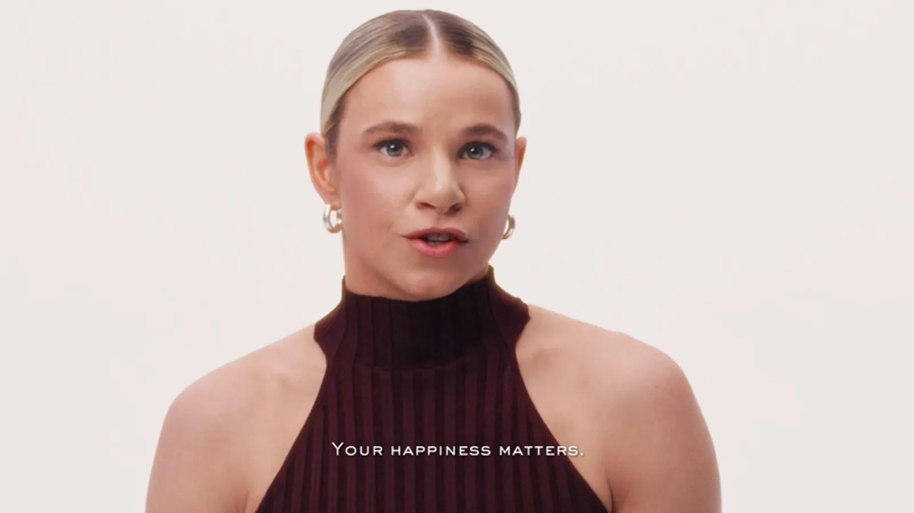

1 de cada 3
Prevención
Una de cada tres mujeres convivirá con ansiedad o depresión a lo largo de su vida. Cuanto antes se nombra, menos pesa.
¿Estoy bien porque realmente lo estoy o porque es lo que respondo automáticamente?
Juntos en la prevención de los problemas de salud mental de las mujeres

Abrimos la duda
A veces decimos «estoy bien» sin pararnos a pensar cómo estamos realmente.
¿Y si hay algo más detrás?
Pasa el cursor por cada fraseToca cada frase*
Lancôme + Fundación Manantial
Tres objetivos, una misma idea: que preguntarse cómo se está deje de ser algo excepcional.
Una de cada tres mujeres convivirá con ansiedad o depresión a lo largo de su vida. Cuanto antes se nombra, menos pesa.
La ansiedad y la depresión se diagnostican hasta el doble en mujeres que en hombres. Hablar de ello es parte del cuidado.
Es el tiempo que puede pasar entre los primeros síntomas y pedir ayuda. El estigma es lo que alarga esa espera.
Cuestionario · 3 pasos · 4 minutos
A veces, preguntártelo es el primer paso.
Mujeres a las que queremos escuchar
Es una herramienta de prevención y autoobservación, nunca un diagnóstico.
Voces
Hemos hablado con mujeres que, como tú, han normalizado el «estoy bien». Estas son sus historias.
Decir «estoy bien» no siempre significa que nos hayamos preguntado cómo estamos.
Preguntarte cómo estás también es cuidarte.
Quiero saber cómo estoy →Artículos Lancôme
Contenido elaborado con Fundación Manantial y alojado en Lancôme.
Fundación Manantial
Proyectos